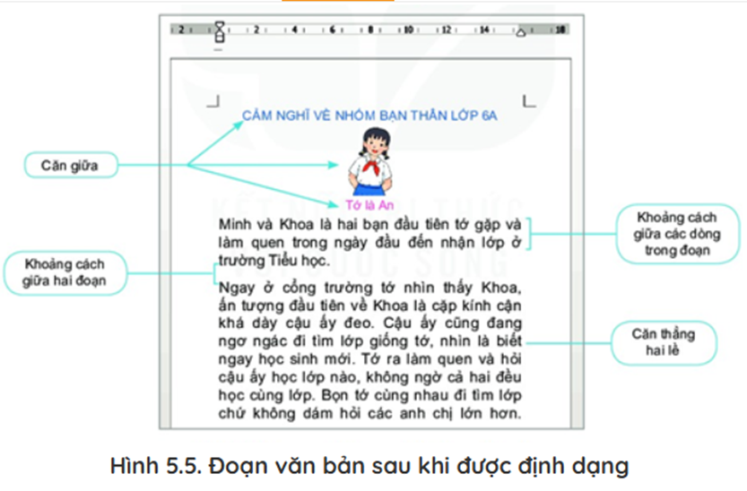
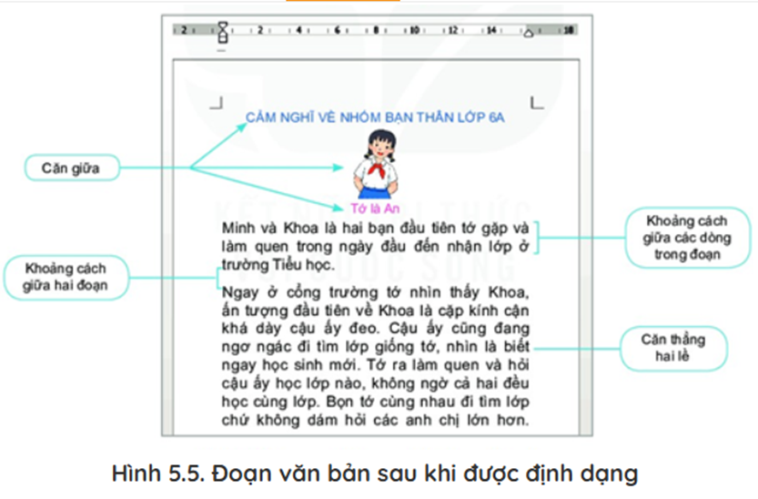
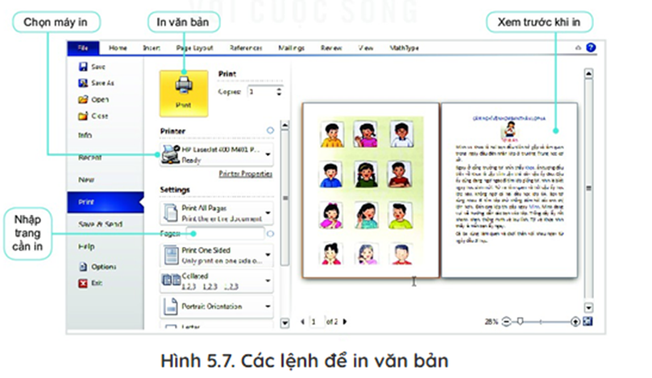
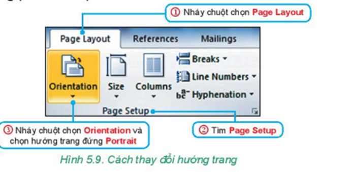
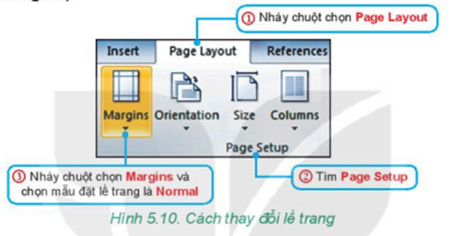

- Phần mềm soạn thảo văn bản có thể được cài đặt trên máy tính hoặc chạy trực tuyên trên Internet,... Có nhiều loại phần mềm soạn thảo văn bản khác nhau, chúng đều có các chức năng cơ bản sau đây:
Để nâng cao hiệu quả sử dụng, phần mềm Soạn thảo còn có một số chức năng nâng cao khác:
Ở cấp Tiểu học, chúng ta đã học cách tạo văn bản chứa chữ và định dạng kí tự. Để văn bản được trình bày đẹp, dễ đọc, dễ nhớ thì ngoài việc định dạng kí tự, chúng ta cần định dạng đoạn và định dạng trong văn bản.
Trong phần mềm soạn thảo văn bản, đoạn là phần văn bản thường được phân cách bởi dấu ngắt đoạn. Dấu ngắt đoạn xuất hiện khi chúng ta nhấn phím Enter. Việc định dạng giúp chúng ta thay đổi cách trình bày của đoạn trong văn bản. Ví dụ: tăng, giảm lề của đoạn, căn chỉnh lề, đặt khoảng cách giữa các dòng trong đoạn,... Các lệnh định dạng đoạn nằm trong thẻ Home, ở nhóm lệnh Paragraph
 

- Mỗi cuốn sách có hình dạng và kích thước khác nhau phụ thuộc vào việc định dạng trang | văn bản. Để văn bản đẹp và có bố cục hài hoà, em cần định dạng trong văn bản.
Các lệnh định dạng trong văn bản nằm trong thẻ Page Layout, ở nhóm lệnh Page Setup. Các yêu cầu cơ bản khi trình bày trang văn bản gồm:
- Sau khi hoàn thành việc tạo văn bản, em có thể in văn bản ra giấy. Để thực hiện công việc này, trong thẻ File, em chọn lệnh Print.
Nhiệm vụ: Cuốn sổ lưu niệm của lớp chứa những bài viết cảm nghĩ về bạn bè, thầy cô và mái trường. Hình 5.8 là bài viết Cảm nghĩ về nhóm bạn thân lớp 6A của bạn An. Em hãy tham khảo bài viết này để soạn một bài viết cảm nghĩ của em trên phần mềm soạn thảo văn bản. Bài viết của em sẽ là một trang trong cuốn sổ lưu niệm của lớp.
Một số công việc em cần làm:
Trong bài viết của An, phần tiêu đề, hình ảnh và giới thiệu tên của An được căn lề giữa, phần văn bản còn lại được căn đều hai bên. Để thực hiện căn lề, em làm như sau:
- Thực hiện tương tự để căn lề cho các đoạn văn trong bài viết.
- Giả sử em muốn chọn hướng trang bài viết Cảm nghĩ về nhóm bạn thân lớp 6A của bạnên là hướng đứng (Portrait), mẫu đặt lề trang là Normal, khi đó em thực hiện theo các bước sau:
- Chọn hướng trang (Orientation)
- Chọn lề trang (Margins)
- Chọn File/Save để lưu tệp văn bản với tên là CamNghiVeBan.docx.